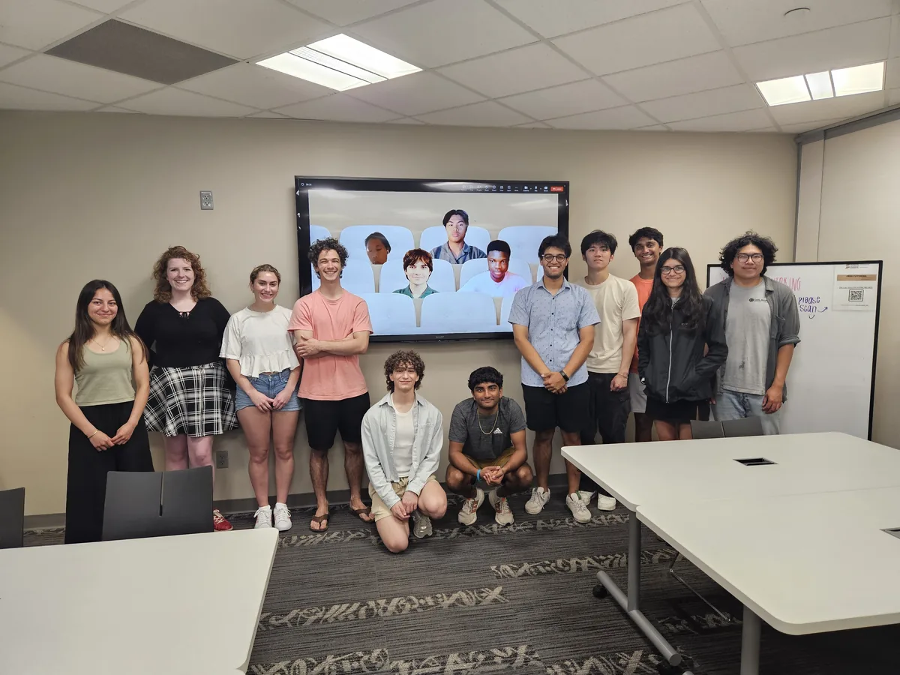
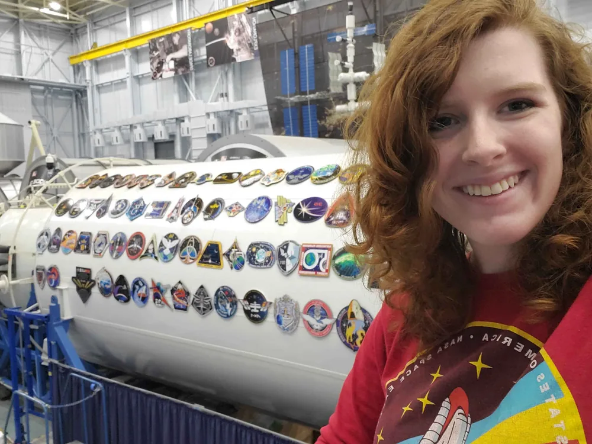
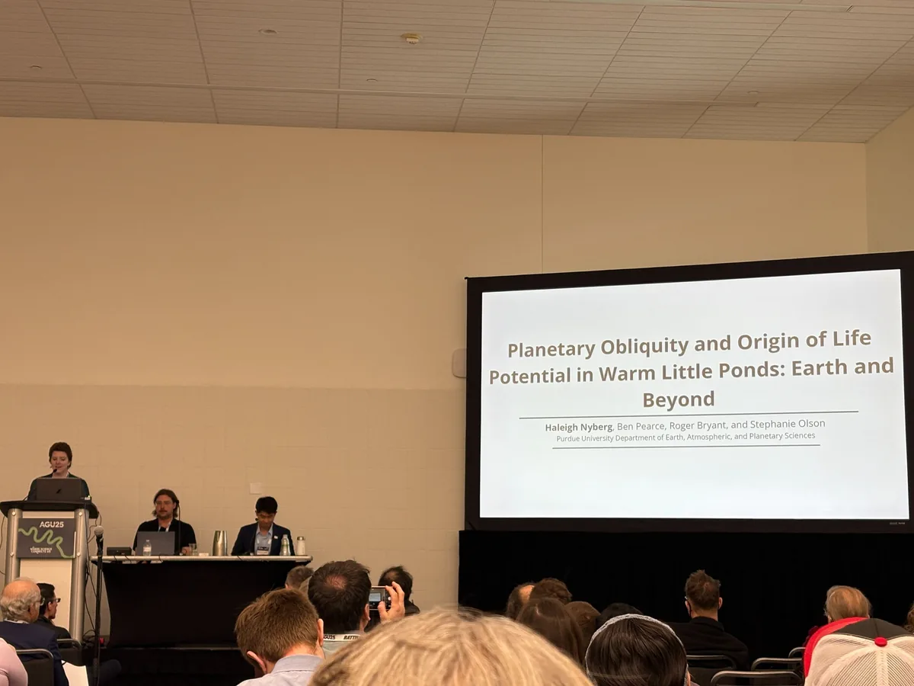
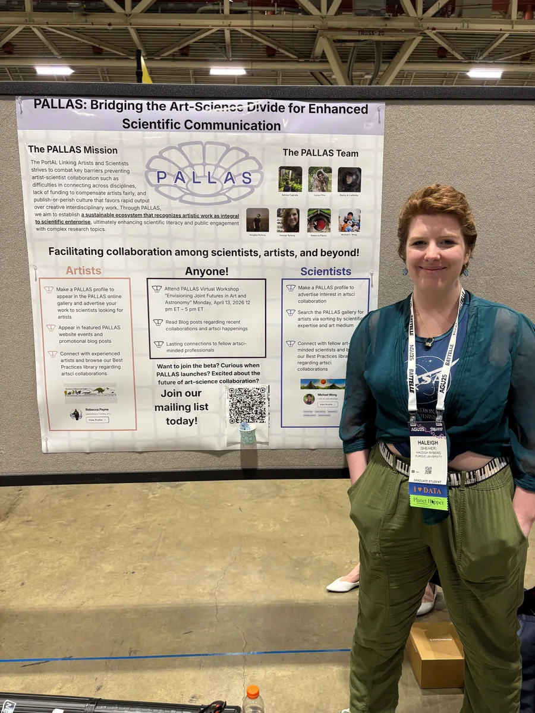
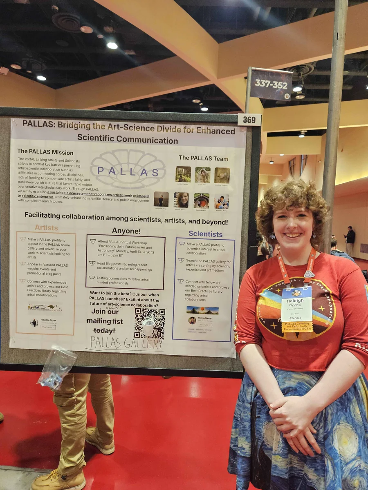
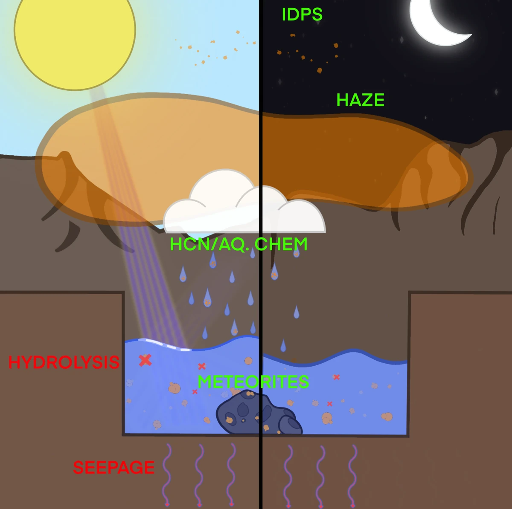
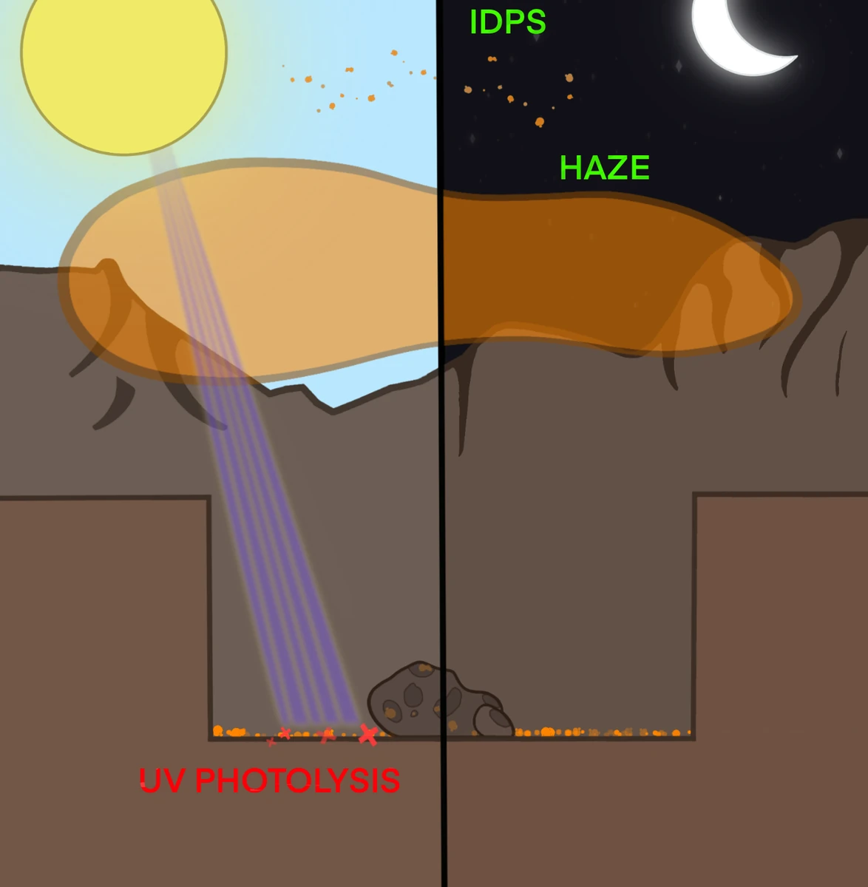
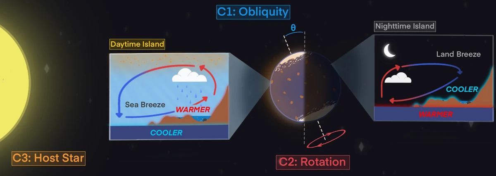
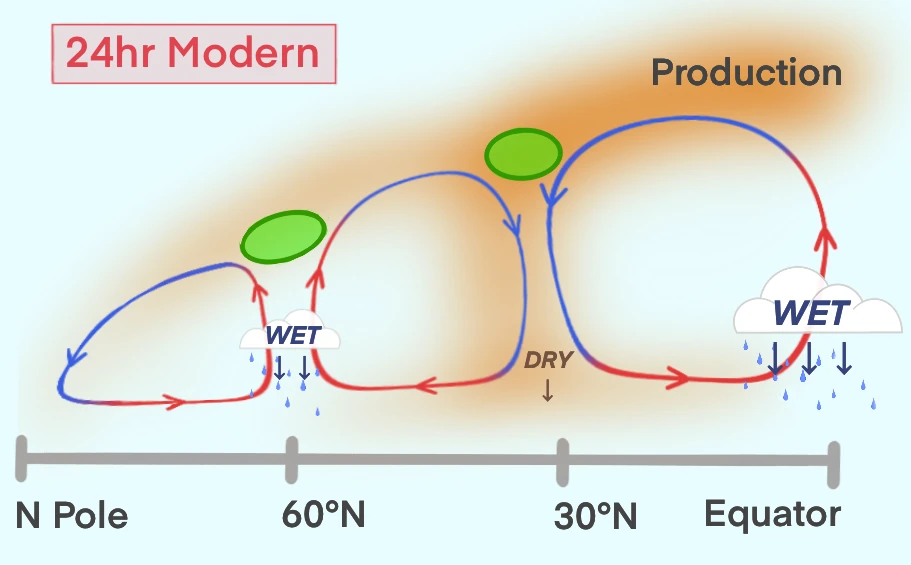
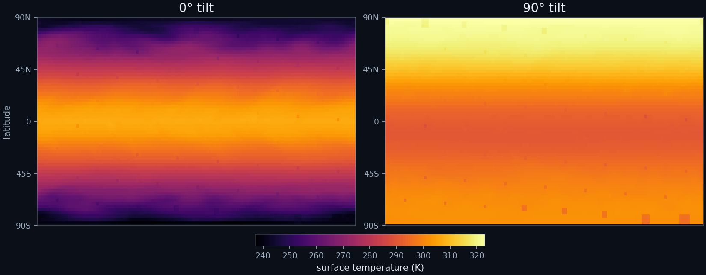

PhD Candidate (ABD)AstrobiologyPurdue EAPS
I map how a planet's tilt, spin, and star shape its ability to host an origin of life.
PhD Candidate · Computational Astrobiology · Purdue
NSF Graduate Research Fellow working with Dr. Stephanie Olson. I run ExoPlaSim simulations across obliquity, rotation rate, and stellar type to track wet-dry cycling in shoreline ponds (the conditions RNA precursors need to accumulate).
A planet that holds liquid water can sustain life. Whether it can start one is a different question, and it is the question my doctoral work asks: which planetary conditions are most conducive to an origin of life, and how that knowledge can point future missions like NASA's Habitable Worlds Observatory and ESA's PLATO toward the targets most likely to have actually originated one.
In Dr. Stephanie Olson's PHAB Lab at Purdue, I use ExoPlaSim and a custom post-processing pipeline to simulate volcanic island worlds across obliquity, rotation rate, and stellar host, tracking the wet-dry cycling and prebiotic-organic accumulation that prefigure abiogenesis. The deliverable is an Origin of Life Index (a pre-computed ranking of exoplanet targets by their likelihood of originating, not just sustaining, life).


Alongside the science, I've spent two semesters as scrum master for 16-member, multi-university teams developing an Unreal Engine visualization and mission-planning tool for NASA's Artemis Gateway, in partnership with Barrios Technology and Johnson Space Center. It turns a real spacecraft and its live EVA procedures into something an astronaut can rehearse inside before flying. I also co-founded PALLAS, designing the front-end of a platform that connects artists with scientists for professional collaboration.



As an NSF Graduate Research Fellow, I serve as Executive Secretary on NASA's Habitable Worlds and Exoplanet Research Program review panels, peer-review for the Planetary Science Journal, and coach incoming GRFP applicants through Purdue's Office of Graduate School and Professional Studies after winning my own.
Selected Projects
PDF preview available on larger screens.
Computational Astrobiology · ExoPlaSim
For a planet to host life, it must first become the origin of that life. I run ExoPlaSim (a 3D general circulation model) across a parameter space of obliquity, rotation rate, star type, and surface configuration to figure out which planets allow wet-dry cycling in warm little ponds. The pond model then tracks whether precipitation, evaporation, and haze deposition let RNA precursors actually accumulate.
Chapter 1 (in prep for PNAS): wet-dry cycling distribution is heavily dependent on incoming stellar flux distribution, with global permissiveness at higher obliquity. Organic concentrations heavily depend on the deposition of haze and the ability for warm little ponds to retain organic inventories throughout wet phases. Over 1,500 simulations so far, spanning all scenarios with a combined land-ocean-space-substellar map set.





The island you see here is what I simulate (a volcanic hotspot where sea-land breeze circulation drives evaporation and precipitation through shoreline ponds).
Happy to talk about exoplanet climates, prebiotic chemistry, or GCM development.